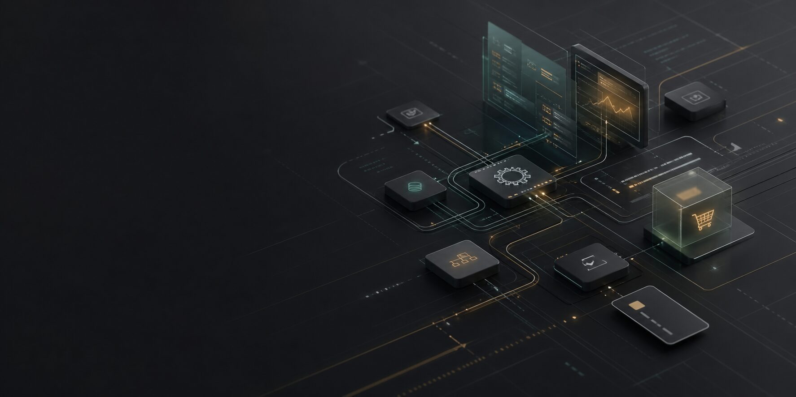

Business automation and internal tools
Turning repetitive spreadsheet, email, reporting, and operational work into secure tools that save time and reduce manual errors.

Independent systems architect · Varna, Bulgaria
Independent systems architect helping businesses turn automation, AI, and complex workflows into reliable software systems.
Software career since 1999 · Remote-first · B2B systems and automation
The tools for building software have changed dramatically. The hard part is still understanding the business problem, choosing a sensible architecture, managing risk, and making the system reliable enough to use.
I combine modern AI-assisted development with more than two decades of production software experience. The result is faster prototyping and automation, without treating generated code as a substitute for judgement.
Turning repetitive spreadsheet, email, reporting, and operational work into secure tools that save time and reduce manual errors.
Applying AI where it can accelerate real work, with clear constraints, review points, and software around it that remains understandable.
Reviewing architecture, implementation choices, automation plans, and vendor decisions so non-technical teams can move forward with more confidence.
More than two decades building production software, working across product development, architecture, implementation, maintenance, and long-lived systems.
Long-term contractor experience with deep ownership of product code, delivery quality, technical decisions, and the steady improvement of business-critical SaaS software.
Building AI-enabled tools, automation systems, and payment-aware web software with a preference for clear workflows, measured complexity, and reliable outcomes.
Start with the workflow, the constraints, and the cost of the current problem. Good software begins before implementation.
Define the smallest useful solution, the risks to avoid, and the decisions that need to remain visible to the business.
Build, review, or advise with an emphasis on working outcomes, maintainable systems, and clear communication.
This site represents Paolo Tozzo as an independent systems architect. It exists as the public business presence for automation work, AI-enabled software, integrations, and payment-enabled applications developed and operated under my name.
For software support, business questions, or general contact, use the details below. Messages are handled directly by Paolo Tozzo.